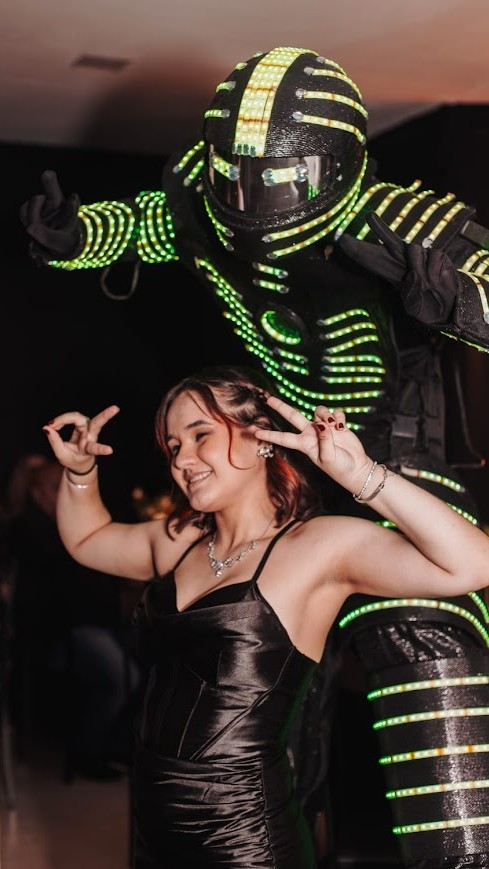
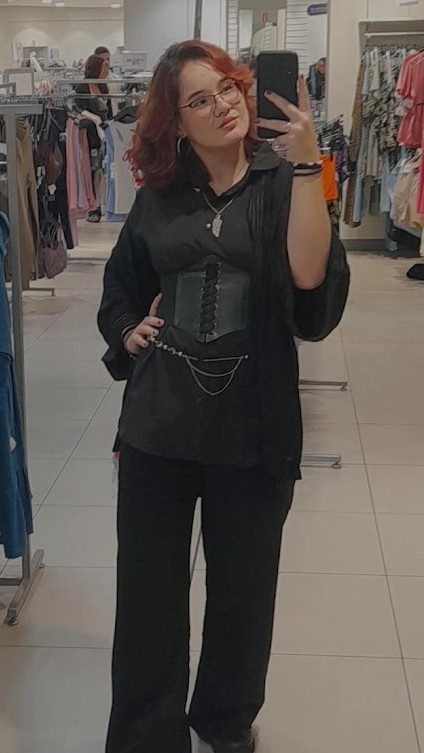
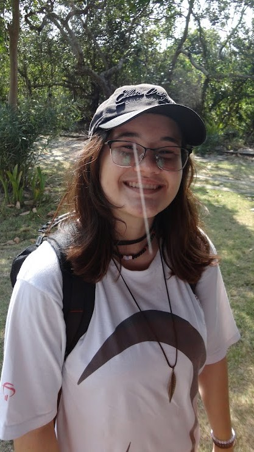
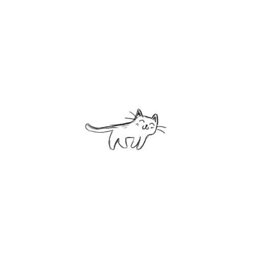

| Só uma musiquinha de fundo :) |
|
HOME |
|---|
 |
SOBRE MIM |
||||||||||||||
|---|---|---|---|---|---|---|---|---|---|---|---|---|---|---|---|
| Meu nome é Caroline, tenho 18 anos e agora moro em
Vila Velha - ES,
mas já morei em cidades como Cachoeiro de Itapemirim - ES e Colatina - ES. Desde cedo tenho interesse por games, funcionalidade e tecnologias, o que me motivou a buscar conhecimento e desenvolver minhas habilidades dentro da área. Ao longo da minha trajetória até agora, venho me dedicando aos estudos e ao crescimento pessoal, sempre buscando aprender e compreender coisas novas, melhorar minhas competências e me conscientizar sobre conteúdos de relevância geral e em alta. |
|||||||||||||||
|
OBJETIVOS |
 |
||||||||||||||
| Meu principal objetivo profissional é atuar na área de tecnologia e/ou
entretenimento, desenvolvendo e dando vida a ideias criativas que possam gerar felicidade e praticidade para os usuários. Busco crescer profissionalmente, adquirir experiência e conhecimentos no mercado de trabalho e me tornar um profissional qualificado e reconhecido tanto pelos meus feitos quanto minha conduta dentro e fora de um ambiente formal. Futuramente, pretendo ter me estabilizado em minha carreira como um todo e ter completado diversos projetos dos quais eu possa me orgulhar e sentir gratificação ao relembrar de suas execuções. |
|||||||||||||||
|
HABILIDADES |
|||||||||||||||
| ⁍ Adaptabilidade a novos modelos e conhecimentos ⁌
⁍ Organização e responsabilidade ⁌ ⁍ Trabalho em equipe ⁌ ⁍ Comunicação básica e em Língua Estrangeira (Inglês) ⁌ ⁍ Pensamento criativo, estético e artístico ⁌ ⁍ Facilidade em aprender novas ferramentas, métodos e dinâmicas ⁌ |
|||||||||||||||
|
INTERESSES |
|||||||||||||||
| Entre meus interesses e hobbies, se destaca minha afinidade
por artes e comportamento humano... Gosto muito de teatro, música, dança, escrita, desenho, experimentos sociais- Acho que o ser humano tem muito a aprender ao analisar o comportamento dos demais além do seu próprio, entendendo como ele, como indivíduo, impacta outras pessoas independente de suas intenções. Fugindo do lado filosófico da coisa, eu gosto de esportes como vôlei e ginástica rítmica, além de apreciar frequentemente músicas semelhantes e do gênero do Kpop, Jpop, e as variantes da Música Indie! Passo muito do meu tempo lendo fanfic e criando histórias avulssas em minha cabeça para entretenimento próprio também. |
|||||||||||||||
 |
|||||||||||||||
|
ACADÊMICO |
|||||||||||||||
| Realizei meu ensino do Fundamental ao Médio (3° a 3ª) na
Fundação Bradesco, em Vila Velha, e me destacava entre meus colegas por conta de minhas notas, médias e entendimento das matérias. |
|||||||||||||||
| Atualmente, estou cursando o primeiro período de Ciências da Computação
na UVV (Universidade Vila Velha) com a seguinte grade curricular:
|

VOLTAR